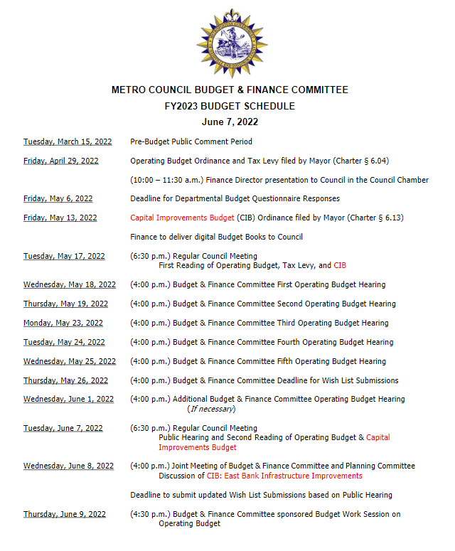
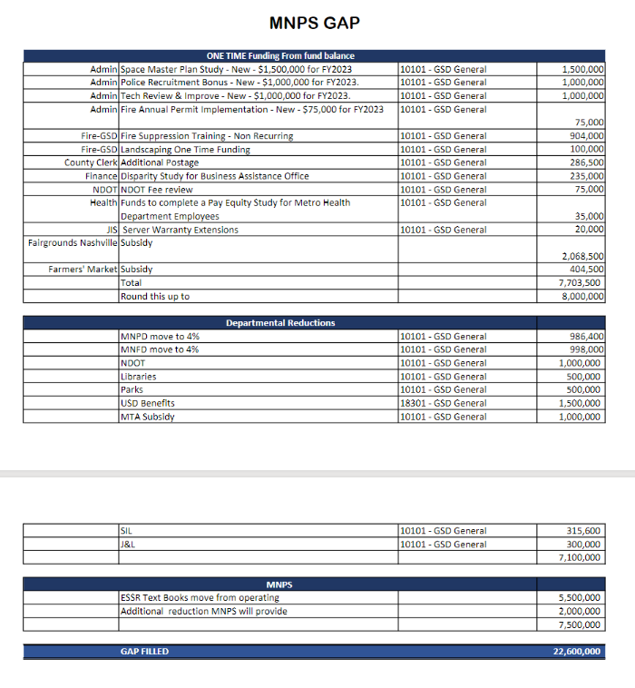
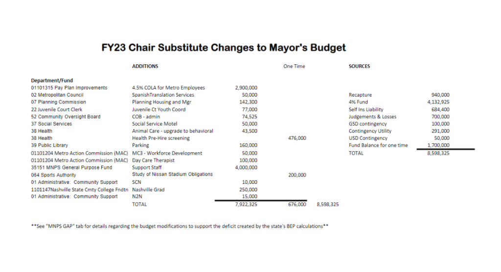
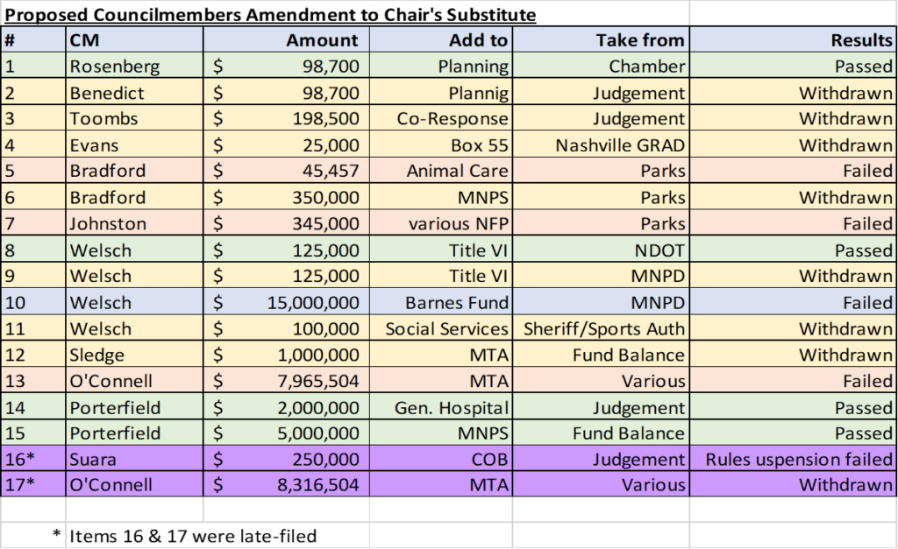

Final FY 23 Operating Budget – As Amended
On June 21, 2022, the Metro Council voted on the FY23 Metro budget, a process that started in April. The process began with introducing the mayor’s budget followed by meetings with department heads, community members, and council deliberations and workshops. Though the council has already passed the budget, I feel it is still important to highlight the differences between the mayor’s budget, the chair’s substitute budget, and the amended substitute budget, which eventually became the FY23 budget.
The Metro Charter requires the Mayor to propose an annual operating budget by May 1. The Council is required to pass its own budget by June 30 or else the Mayor’s budget automatically goes into effect. Please see my June 3rd blog on “Dissecting the Mayor’s Budget” for a detailed analysis of what is included in the mayor’s budget.
Chair’s Substitute Budget
Following the mayor’s budget, the next step is for the chair of Budget and Finance to propose a substitute budget. To assist in making an informed decision, this year’s chair- CM Burkley Allen, started the budget season with the “Budget 101” educational series from December to February. Once the mayor’s budget was announced, a series of hearings were conducted with select department heads. The process this year included two public hearings for community members to share their thoughts on the budget. Councilmembers were then encouraged to submit their Wishlist (what the councilmembers would like to see included in the substitute) which is then followed by budget workshops.

What is in the Chair’s Substitute Budget?
For my June 19th Budget Conversations, I sat with Budget Chair CM Burkley Allen to discuss her substitute budget. You may click on the image above to watch the full conversation with Chair Allen on Facebook
Below is a summary of our conversation.
$22.6M MNPS Deficit
The first difference between the mayor’s budget and the chair’s substitute budget is making up the $22.6 million deficit in the MNPS budget. The estimated BEP funding expected from the state was short by $22.6M. This was discovered after the mayor’s budget was announced. Hence it was up to the budget chair and council to find a solution. See my budget conversation here about MNPS on the reason for the shortage and other information.
To make up the deficit, the chair relied on MNPS for a third of the deficit. About a third came from a reduction in some expenses or moving them to alternative funding. For example, $1.8M of MNPS funding was moved to 4% instead of the operating budget. The final one-third came from the Fund Balance. This was achieved by moving items that are only one time and not recurring. Best accounting practice dictates that recurring expenses should be funded with recurring revenues. Since these items were non-recurring, the budget chair and finance director agreed funding these from the fund balance is a good move.

OTHER CHANGES
The following items with explanations are included in the chair’s substitute budget as detailed in a June 15 letter from Chair Allen to the council
• MNPS Support Staff Raise – A total of $4,000,000 is allocated based on guidance from MNPS
Human Resources. In addition to the 4% COLA, steps, and raises for bus drivers, cafeteria
workers, and paraprofessionals already included in the proposed budget, this added increase
will bring all support staff up to a living wage and address compression issues.
• Metro Employee COLA – An additional .5% cost of living increase will bring the total Metro
employee raise to a 4.5% cost of living increase plus steps.
• Housing Planning Positions – Funding for the Planning Manager position has been included in
the budget.
• Day Care therapy support – Funding for one of two positions has been included.
• Nashville Grad –Funding of $250,000 has been included in addition to the $500,000 that was
already in the proposed budget.
• Animal Behavior specialist – Funding has been provided that will enable MACC to hire an animal
behavior specialist that can come on board immediately and facilitate moving animals into homes.
• Non-profits were allocated 50% of the wish list requests or will be considered for ARP funding.
• COB was allocated funding for one new position as well as a specially designated new legal
position in the legal department.

ITEMS NOT INCLUDED IN SUBSTITUTE BUT FUNDED FROM OTHER SOURCES
According to Chair Allen’s letter, there were many items not included in the budget as a line item, because they have been designated for other funding sources or are funded as part of an overall department budget. These are:
• $105,000 request for beautification budget ($3,000 for each district beautification commission) will be funded by NDOT
• Participatory Budgeting – Funding of $40,000 for a coordinator position will be funded with
grant appropriation.
• Historic Plaques – This will be funded as part of the 4% fund in the upcoming allocation.
• Traffic calming projects can be funded under capital.
• PENCIL will be funded under 01101379 Education Research Fund.
• HEALS non-police crisis response is funded under the Health Department and Emergency Medical Services (Fire) as a pilot to begin in January.
• At least one BCycle station will be funded in the next 4% allocation.
• Title VI compliance is partially covered under various department
AMENDED SUBSTITUTE BUDGET
The final step as part of council approval of the final budget is the consideration of council members’ amendments. As indicated earlier, council members submit a Wishlist to the chair for inclusion in her budget. If those items did not make it to the chair’s substitute, then council members have the option to propose an amendment to be added to the chair’s substitute. The amendment must be approved by a majority vote to be added to the budget. This year 15 council members proposed 17 amendments to the chair’s substitute. Two of the amendments were late-filed. Below is a list of the proposed amendments with the respective council votes/action.

LATE FILED AMENDMENTS
There were two late-filled amendments to the chair’s substitute budget. Late filed amendment 16 was filed by me. As vice-chair of budget, I support my budget chair and I believe that a lot of thoughts and processes went into the chair’s substitute. However, looking back at my budget conversation on alternatives to policing and some public comments, I felt strongly that the Community Oversight Board (COB) needed more staff than allotted in the mayor’s budget and the chair’s substitute. As a result, I submitted an amendment for $250K to be taken from Judgment and losses to supporting the addition of a social worker and public information officer for the COB.
When a bill is late-filed, council rules call for a vote to request for suspension of rules to allow a late-filed item to be heard. Unfortunately, the suspension of rules only requires two votes/objections to fail. In the case of my late-filed amendment, CM Swope and CM Nash objected to the suspension of the rules, thereby causing the amendment to fail without proper discussion on the floor. While I understand this rule is to ensure that all bills are timely filed, I strongly believe 2 votes out of 40 to kill a bill is too small. I hope that this rule is reviewed in the future.
Late filled amendment number 17 filed by CM O’Connell to add $8.3M to MTA from various sources was withdrawn.
A final copy of the substitute budget and the approved amendments can be found at here.
Budget Conversations- Community Organizations Input
A good budget conversation is incomplete without community input. I want to thank Ms. Whitney Pastorek Mrs. Katharine Rumble with STAND UP Nashville, Mr. Thomas Campion with Neighbor 2 Neighbor, and Mr. E J Se’Bree with NOAH for joining me for my community input budget conversation on June 11th. Your insights and suggestions were noted by the budget chair and myself. I believe those suggestions form part of the basis, for some of the decisions that went into the substitute. Thank you for all the work that you do for our community
If you missed this insightful conversation, you can watch the entire episode at the link below.
Concluding Remarks
I want to commend the budget chair for a job well done. Thanks for selecting me as your vice-chair, and it was a pleasure working with you. I am grateful to my colleagues for the workshops and for voting for the amendments that passed. I would like to highlight some specific amendments, like the CM Welsch Title VI amendment. Language access is critical for the immigrant community. We cannot in good faith talk about Diversity Equity and Inclusion without access – what is the point of resources that cannot be accessed? The Title VI position allows us to remove/mitigate the number barrier to access.
As a member of the minority caucus, I am proud of the caucus Chair – CM Porterfield and the caucus budget chair – CM Toombs, and all the members for leading the charge on amendments 14 and 15 which added $2M to Metro General Hospital and an additional $5M for MNPS support staff. We must continue to take care of those that are taking care of our city.
Finally, it is important to point out that while the chair and council did an amazing job of listening and juggling, the total amendment from these efforts is only $30M ($15M for MNPS deficit, $8M for other chair’s substitute and $7M from the CM amendments). This amounts to only 1% of the total budget. Since the bulk of the budget is determined by the mayor, residents and organizations need to engage the Mayor earlier on for a meaningful impact.
Thanks to my colleagues, my panelist, the viewers, and everyone that joined this year’s budget conversations. Please let me know if there is anything we can or should do better for next year’s budget.
As always, if you have any questions or concerns about anything we have discussed, please do not hesitate to reach out to me.